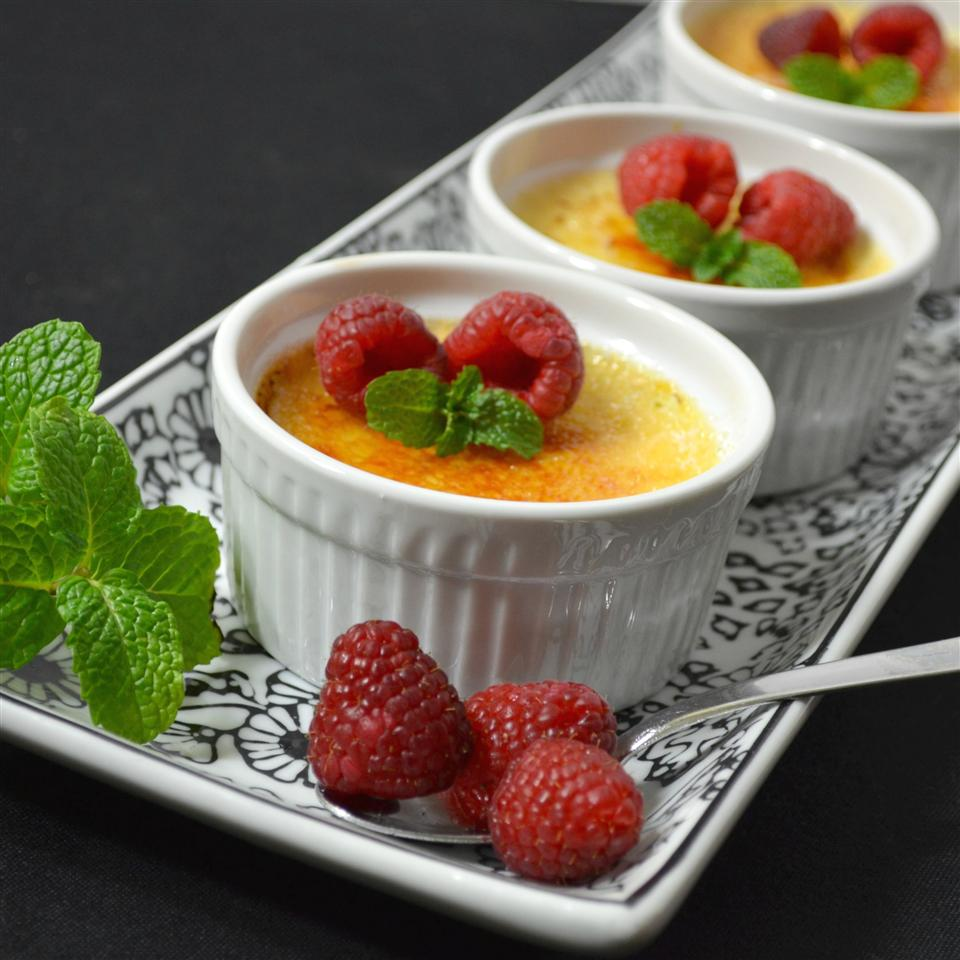

Eggnog Creme Brulee

Description
I have been making creme brulee for my wife for quite some time and one day she asked me, 'Honey, is it possible to make creme brulee out of eggnog? I think that would be so yummy.' So, I bought some eggnog and set about finding out if it is possible, and it is. You can also take the same recipe and pour it into a prepared pie crust for an eggnog custard pie. It's a lot less work and hassle than individual ramekins.
Ingredients
- 2 cups eggnog
- 4 egg yolks
- 1/4 cup white sugar
- 3 oz mascarpone cheese
- 1 dash nutmeg
- 1 dash cinnamon
- 1 tsp vanilla extract
Steps
- Preheat oven to 350 degrees F (175 degrees C). Place 4 ramekins or custard cups into a shallow baking dish, and fill the dish with water to half-way up the sides of the ramekins.
- Pour the eggnog into a pan over medium heat. Cook and stir occasionally until the mixture simmers, about 10 minutes.
- Meanwhile, place the egg yolks and sugar into a mixing bowl; beat until light colored and frothy. Stir in the mascarpone until well blended and smooth. Whisk 1/4 cup of the heated eggnog mixture into the eggs. Gradually whisk the remaining eggnog into the eggs. Pour the mixture through a fine sieve to remove any egg strands. If desired, stir in the nutmeg, cinnamon, and vanilla. Pour into the prepared ramekins, dividing evenly.
- Bake in preheated oven until custard has set, 30 to 45 minutes. Centers should wiggle slightly when shaken, but not be soupy.
- Remove from oven and cool 30 minutes; refrigerate at least 3 hours before serving.